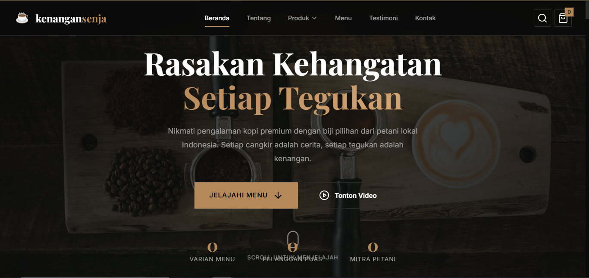

Website E-Katalog kenangansenja
Deskripsi
Mengembangkan website e-katalog untuk kedai kopi lokal kenangansenja, sebuah brand kopi yang memfokuskan diri pada biji kopi premium dari petani lokal Indonesia. Fokus utama saya adalah membangun identitas visual yang hangat dan premium sekaligus membuat alur pemesanan terasa mulus, sehingga pengunjung dapat menemukan produk, membuka detailnya, dan memasukkannya ke keranjang tanpa hambatan. Seluruh antarmuka dibuat responsif agar tampil optimal di desktop maupun perangkat seluler.
Fitur Utama
- Hero section dengan ajakan khas Rasakan Kehangatan Setiap Tegukan
- Katalog produk kopi beserta halaman detail produk
- Keranjang belanja interaktif beserta perhitungan total belanja
- Halaman Tentang, Menu, Testimoni, dan Kontak
- Kolom pencarian produk dan indikator jumlah item pada keranjang
- Tampilan responsif untuk desktop dan perangkat seluler